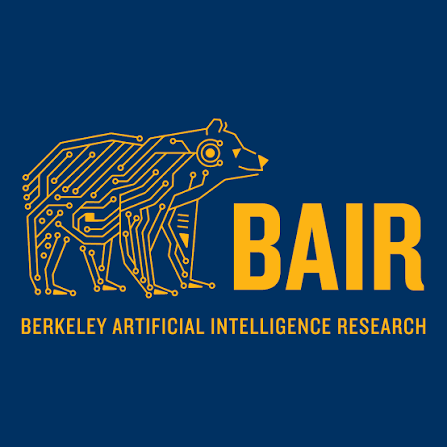

Frontier models keep scaling. Human behavior accuracy doesn't.
SAPIENS is a purpose-built behavior foundation model. On real purchase behavior it predicts what people actually do far more accurately than the best frontier LLM — a gap that hasn't closed across a full generation of releases. The sharper these models get at reasoning, the further they drift from how people actually behave.
reviews the model reproduced in substance — same topics, features, and sentiment · each model in its strongest setup (full user history)
We didn't cherry-pick the setup. The plateau holds across all three baseline strategies.
Behavioral prompting has three standard approaches: reconstructing a user from their own history, from a discovered tribe, or from population-level personas. We ran every frontier model through all three. None break the ceiling.
User history
Tribe persona
Population persona
Behavior accuracy isn't bottlenecked by model scale — it's bottlenecked by data and architecture built for behavior. That's the moat a bigger LLM can't buy its way past.
Benchmarked on real behavior from the Amazon Public Dataset.
We evaluate against the Amazon Public Dataset — one of the largest public records of revealed human behavior. Every review is a real person's verified purchase, star rating, and written reaction: ground truth we can score a prediction against, not a survey answer someone gave to please a researcher.
Behavior, not opinion
Verified purchases, ratings, and free-text reactions are what people actually did — the signal synthetic research usually can't reach.
Spans across categories
Categories map directly to the markets we sell into, so accuracy on the benchmark transfers to customer use cases.
Modeled thousands of real users
Deep per-user history lets us give every LLM baseline its fairest, strongest shot — and SAPIENS still clears it decisively.
Public & reproducible
Anyone can pull the same corpus and re-run the protocol. The result isn't a claim you take on trust.
How we score a prediction
Accuracy isn't string-matching. We compare the model's generated review against the person's real one on meaning — a prediction only counts when it says what they said and feels how they felt.
Rational models can't capture irrational people.
General-purpose LLMs are trained to be rational — to get hard problems right. Human decisions aren't. They're driven by taste, preference, value, and motivation: the latent traits that shape what a person, and a whole population, actually chooses. As models get sharper at reasoning, they drift further from that. It's why the curve is flat.
Behavior modeling starts from signal reasoning models never see — niche, first-party records of how real sub-populations actually behave.
You don't get a behavior model by scaling a problem-solver. Learning the irrational is its own discipline, trained toward a different goal.
SAPIENS is our first step toward the North Star of BGI.
Built with the labs that define the field.
SAPIENS is developed with Berkeley AI Research (BAIR) and Carnegie Mellon, with our methods detailed in peer-reviewed research at EMNLP.
